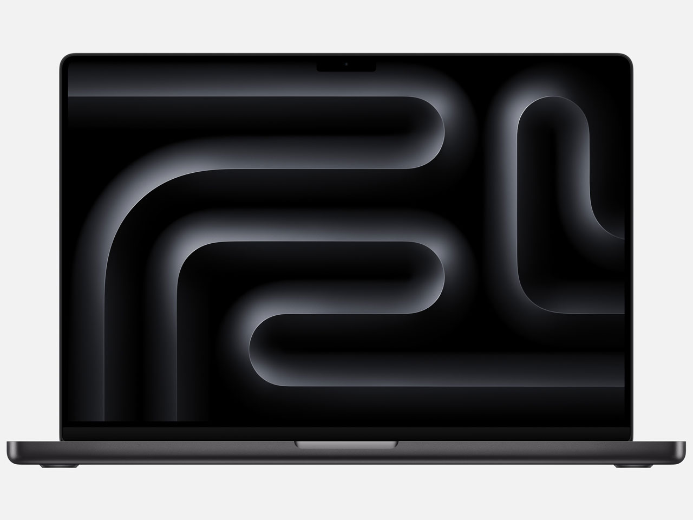

🚀 AIショッピングの未来へ
ようこそ！
Yobi Pasokon.comは、最新のAI技術を活用したショッピング体験を提供します。
- 🤖 AIによる最適な商品提案
- 💬 24時間対応のAIチャットサポート
- 🔍 お客様のニーズに基づくパーソナライズ検索
- ⚡ 即時在庫確認＆迅速配送 📖 詳細紹介ページを見る
💬 AIショッピングアシスタント
ねぇねぇ、私とおしゃべりしようよ！きっと君にピッタリな商品、見つけちゃうからね！
⭐ おすすめ商品

MacBook Pro
MacBook Pro
14インチ M4
パワフルなM3チップ搭載、クリエイティブ作業に最適

ASUS ROG Zephyrus
G14
プロゲーマー向けの究極のゲーミングノートパソコン

Surface Pro 9
Core i7/16GB
2-in-1 デザイン、タブレットとノートPCの両方を実現

ThinkPad X1
Carbon Gen 11
ビジネス向けの最強ウルトラブック、長時間バッテリー搭載
🆕 新製品ニュース
🛒 AIショッピングの流れ
「AIショッピングアシスタント『YoBi』」を活用することで、買い物がより便利で快適な体験になります。
ここでは、AIがどのようにショッピングをサポートするのかをご紹介します。
1️⃣ AIチャットで相談
右下の「YoBi」ボタンをクリックすると、AIチャットウィンドウが開きます。「どんなPCがいい？」と質問するだけで、AIがあなたのニーズを分析し、最適な商品を提案します。
- 💬 気軽に質問できるチャット形式
- 🤖 24時間365日対応のAIサポート
- ⚡ 高速な回答で迷わず解決
2️⃣ AIが最適な商品を推薦
AIはスペック、価格、用途を総合的に考慮し、あなたにぴったりのPCを自動的に選定します。さらに「他のおすすめを見る」ボタンで追加の提案も可能です。
- 🎯 カスタマイズされた商品提案
- 🔍 詳細な商品比較で納得の選択
- 💡 おすすめポイントの簡単な説明付き
3️⃣ ワンクリックで購入
提案された商品が気に入ったら、ワンクリックでカートに追加し、スムーズに購入手続きを進められます。支払いも簡単で、クレジットカードや電子マネーに対応。
- 🛒 シンプルな購入フロー
- 💳 複数の支払い方法に対応
- 🚀 スピーディーな決済プロセス
4️⃣ AIによる配送追跡
購入後もAIがサポート。リアルタイムで配送状況を確認でき、注文履歴や配送進捗もチャット経由で簡単に確認できます。
- 📦 リアルタイムでの配送状況確認
- 📊 過去の注文履歴も管理可能
- ⏱️ 迅速なサポートで安心
この「AIショッピングアシスタント」で、あなたの買い物がもっとスマートで快適なものになること間違いなしです。
ぜひ体験してみてください！🚀